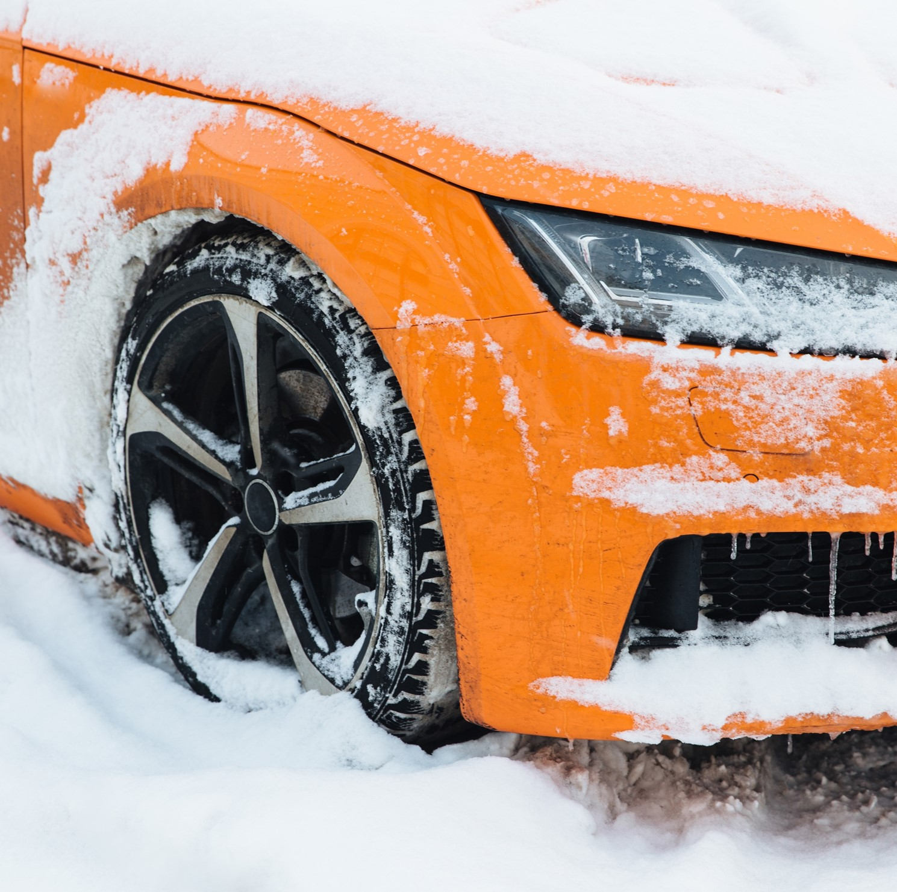
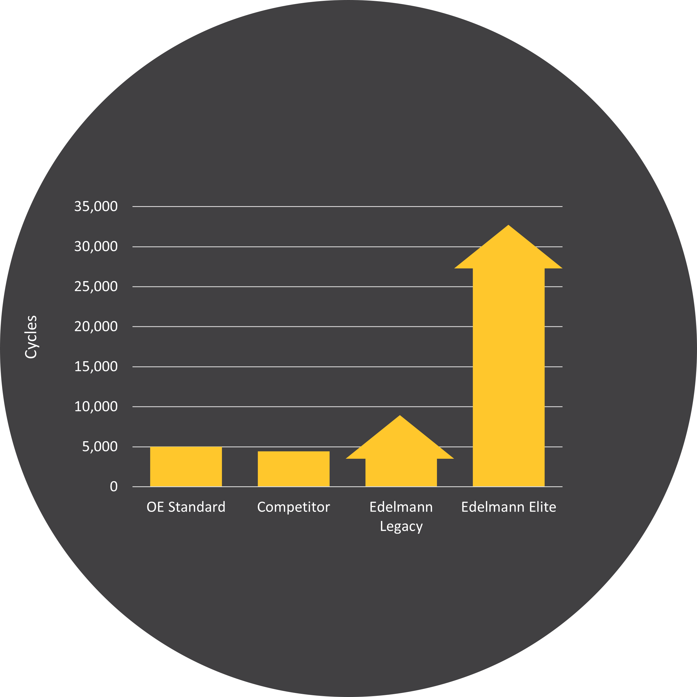

Power Steering
Fundamentals
What Part Do Hoses Play?
Hoses transfer the fluid pressure provided by the power steering pump to the steering rack or gear to add mechanical assistance while turning.
The quality of hose matters to prevent both the failure of the hose itself and failures of other components in the power steering system.


What Matters?
Impulses and Failure Modes
Power steering hoses undergo many standard tests to ensure quality manufacturing. However, there are tests that matter more than the others in real life application benefit.
Impulse testing examines the hoses durability during every day use and resistance to extreme use conditions. These results can directly reflect the overall quality of those hoses prior to use.
Hot Impulse Testing
Main Workload
Hoses are cycle tested at 302°F / 150°C ambient temperature to simulate the average conditions in an automotive engine compartment.
Cycle – the increase and decrease in pressure required to turn a steering wheel of astationary car from one full steering lock – steering wheel stop left or right – to the complete opposite steering lock
Hot Cycle Results
Key Takeaways
- SAE J spec standard requires at minimum 200,000 cycles be completed to pass
- All hoses included in the testing passed the minimum specification
- “Standard” Edelmann® hoses nearly quadrupled the requirement before failing and more than doubled the competition.
Most Important Note: Edelmann Elite® hoses never failed during the tests, evenafter 1 million+ cycles!


Cold Impulse Testing
Start-Up Resilience
Start-Up Durability
Cold impulsetesting is completed with a fluid and ambient temperature of -20° F / -29° C.
With temperatures in the engine compartment averaging closer to the temperatures from the hot cycle testing, cold temperature cycle testing is directly related to the cold weather start-up integrity of the hose.
Cold Cycle Results
Key Takeaways
- Where SAE does not provide a standard, the OE standard has been established at 5,000 cycles
- The competitor hoses failed before the OE standard of 5,000 cycles
- Both the Edelmann Legacy® and Edelmann Elite® hoses surpassed standard and neither failed before testing was concluded.

Edelmann offers an unparalleled range of power steering hoses.
Providing the widest market coverage available, we offer over 3,300 assemblies and 700 kits, and are constantly introducing new parts.

Original Equipment Style
Power Steering Hoses


Power steering hoses should be inspected regularly.
Power steering hoses are subjected to a harsh environment simply by nature of where they are located in the vehicle. Operating temperatures can range from -40ºF up to over +400ºF. Internally, hoses transfer fluid under pressures of up to 1,500 PSI. While transferring fluid, hoses absorb the pressure surges and pulsations and expand and contract to help control noise in the power steering system. Hoses must also resist external wear factors – ozone, grease, oil, road debris, wear from rubbing, and stress being applied from engine torque.
Check the Fluid
Clear or red fluid is free of contamination.Murky brown fluid may contain metal particles or hose debris.Black or burnt fluid is a sign of severe steering problems.


Check the Hose Feel
Brittle hoses are an early sign a hose has lost its ability to absorb pressure surges. However, a soft, spongy feeling indicates serious internal deterioration and leakage.
Check the Tubing for Corrosion, Abrasions, or Cracks
These are common signs of degradation from the environment in and around the engine. This is especially true in areas where salt is used because the corrosion on the tubing can slowly develop failures over time.


Check the Hose to Coupling Connections for Leaks or Drips
This is an indication that the hose may be separating from the coupling. This separation will only worsen as the pressure continues to push fluid through the fitting leading to a larger system failure.
Inspect the Fitting Threads
Stripped and/or dirty threads are a sign of improper installation or worn O-rings. In some cases, the threads may have been cross-threaded and damaged to a point where not only is the hose needing replacement, but also the rack, pump, or gear it attaches to as well.


Inspect the Heat Shielding for Wear from Rubbing Against Metal
These perforations make the rubber hose underneath more susceptible to heat. Also, be sure to check the mounting brackets attached to the hose as these may have caused the hose to shift in and around the engine.
If any of the previous conditions are found, the hoses need to be replaced. Remember, all hoses in the system are subjected to the same conditions, so if one hose shows signs of wear, all hoses should be replaced. Also, when changing any hoses, consider the addition of a premium power steering filter.
North American Supply Chain
Materials manufactured in the United States of America and assembled here in North America. To learn more about our North American supply chain and how it can work for you, watch this video:
97% Fill Rate
Over the last two years, we have maintained a 97% order fill rate, eclipsing many companies in the aftermarket.
No Supply Chain Disruptions
Our North American supply base allows us to adapt more quickly to changes in demand and reduces the influence of global politics.